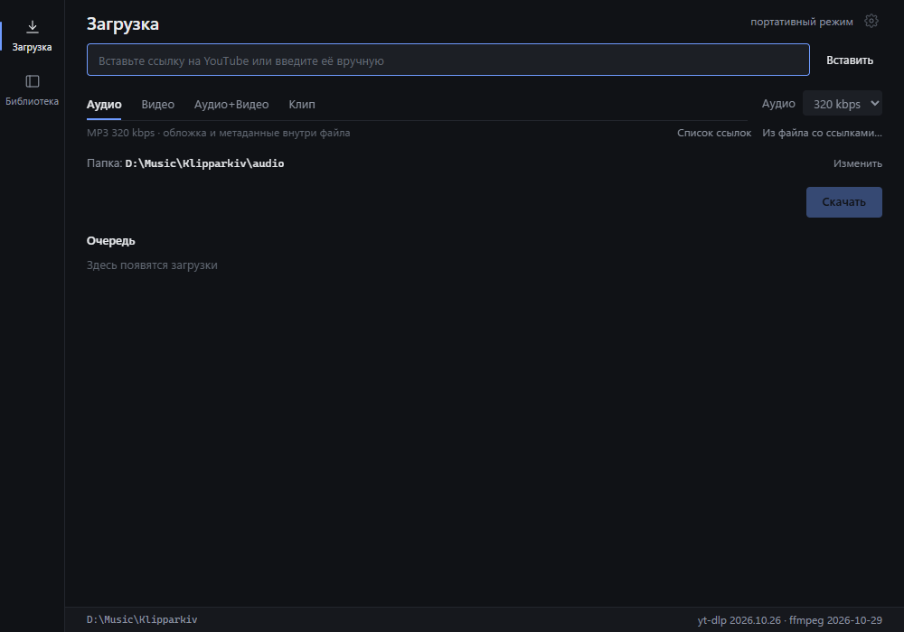
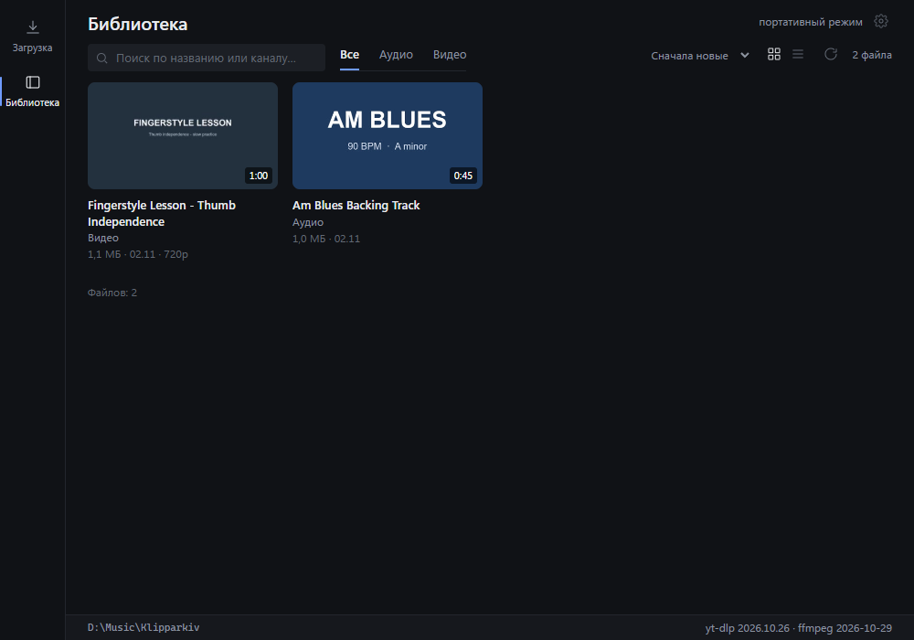

Бэкинг-треки и уроки — офлайн
Аудио, видео и клипы по таймкоду в локальной библиотеке на Windows и macOS. Без терминала и аккаунта.
- Windows 10/11, x64
- macOS 11+, Intel и Apple Silicon
- ~115 МБ скачать
- ~253 МБ на диске

Начните здесь
1. Скачайте нужный файл
- Windows 10/11 x64…-win-x64.zip
- macOS Apple Silicon…-mac-arm64.dmg
- macOS Intel…-mac-x64.dmg
Если не уверены, какой DMG нужен: меню Apple → «Об этом Mac» → «Чип» или «Процессор».
Не скачивайте для первой установки отдельный .exe, .app.tar.gz, .sig или update.json — это файлы обновления.
2. Установите
Windows: распакуйте папку целиком и запустите klipparkiv.exe. SmartScreen может спросить один раз: «Подробнее» → «Выполнить». Папка должна быть доступна для записи.
macOS: откройте DMG и перетащите Klipparkiv в Applications («Программы»). Сборка подписана ad-hoc, но не нотаризована. При первом запуске: Системные настройки → Конфиденциальность и безопасность → «Всё равно открыть» или правый клик → «Открыть».
Windows: если приложение пишет, что не найден yt-dlp, ffmpeg или ffprobe, значит папка bin не распакована рядом с klipparkiv.exe. Выйдите из приложения через трей, распакуйте zip целиком и запустите exe из этой папки. Сообщение показывает точный путь и ошибку Windows.
3. Пользуйтесь
- Вставьте ссылку, которую поддерживает yt-dlp.
- Проверьте предпросмотр и выберите «Аудио», «Видео», «Аудио + видео» или «Клип».
- Укажите папку и нажмите «Скачать».
- Откройте «Библиотеку», чтобы искать и открыть файл в системном плеере.
От ссылки до файла
- Ссылка
- Название, канал, длительность и форматы до начала загрузки.
- Формат
- MP3 128–320 кбит/с или MP4 H.264/AAC 480p–2160p, если источник его отдаёт. Если H.264 нет, берётся лучший доступный поток, и некоторые плееры могут его не открыть.
- Клип
- Нарезка по таймкоду,
00:01:30-00:05:00, аудио или видео. Оставьте начало или конец пустым, чтобы резать до края. - Плейлист
- Весь список или только видео по ссылке, с диапазоном. Файлы складываются в папку с названием плейлиста.
- Ссылки
- Вставьте несколько ссылок сразу или перетащите
.txtв окно. - Очередь
- До 4 загрузок одновременно, с названиями, прогрессом плейлиста вроде
2/42, паузой, продолжением и отменой. - Библиотека
- Обложки, поиск, фильтры, сортировка, открытие в Practice или системном плеере.
- Practice
- Плеер только для аудио: скорость 0.25–2.0, ±12 полутонов, A-B лупы, BPM и автосетка тактов по найденным downbeats, 2–16 долей в такте, лупы по тактам, метроном, именованные регионы, волна с зумом и мини-плеер.
- Архив
- Уже сохранённые элементы пропускаются при следующем запуске. У клипов вместо архива детерминированное имя.
Practice в 1.8.0 работает только с аудио. Видео, аккорды и ноты в этот релиз не входят.

Windows 10/11 или macOS 11+
WebView2 обычно уже есть в Windows; если его нет, установите Evergreen Runtime. Приложению нужно около 253 МБ на диске и папка с правом записи. В Windows данные приложения лежат в data\, медиа в audio\ и video\; WebView2 может держать свой кэш в %LOCALAPPDATA%. В macOS библиотека и медиа лежат в ~/Movies/Klipparkiv, настройки и обновления — в ~/Library/Application Support/Klipparkiv. Для файлов больше 4 ГБ в Windows используйте exFAT или NTFS; в macOS — APFS, HFS+ или exFAT.
macOS
Нативное .app для Intel и Apple Silicon, с yt-dlp, ffmpeg и ffprobe внутри бандла. В DMG и в бандле есть лицензии и уведомления о конфиденциальности.
Сборка подписана ad-hoc, но не нотаризована Apple. При первом запуске: Системные настройки → Конфиденциальность и безопасность → «Всё равно открыть» (macOS 15+) или правый клик → «Открыть» (macOS 14 и старше). Если macOS всё равно блокирует, выполните:
xattr -dr com.apple.quarantine /Applications/Klipparkiv.app- Klipparkiv.appприложение
- Contents/Resources/binyt-dlp, ffmpeg, ffprobe
- ~/Movies/Klipparkivбиблиотека и медиа
- ~/Library/Application Support/…настройки и обновления
Готовы попробовать?
Скачайте zip для Windows или DMG для macOS. Внутри уже есть yt-dlp и ffmpeg, доустанавливать ничего не нужно. Первая загрузка — это одна ссылка, один режим и одна папка.
- klipparkiv.exeприложение
- bin\yt-dlp.exeзагрузчик
- bin\ffmpeg.exeсклейка и нарезка
- bin\ffprobe.exeформаты и длительность
- LICENSE, notices, LICENSES\правовые файлы